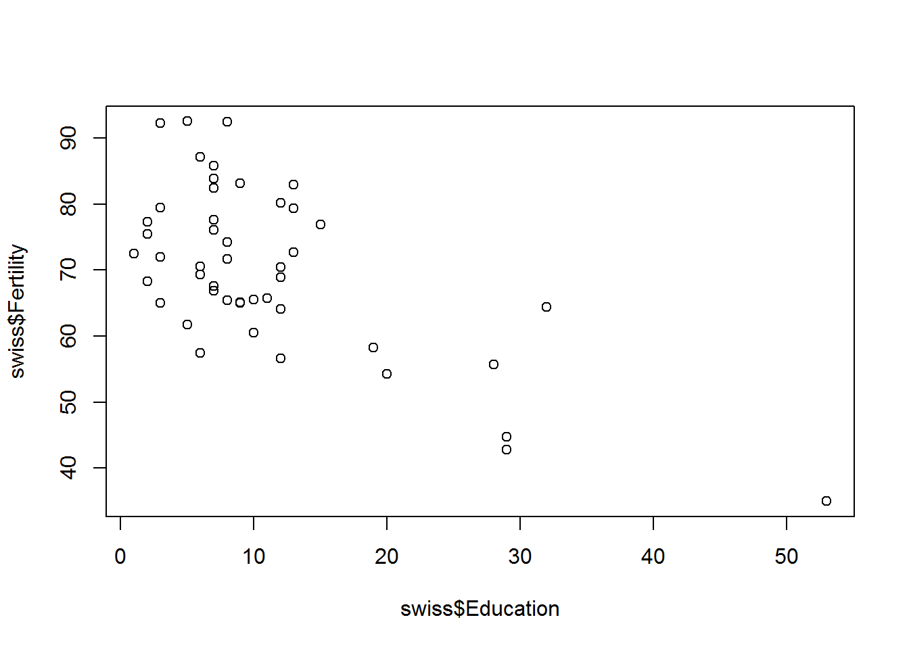
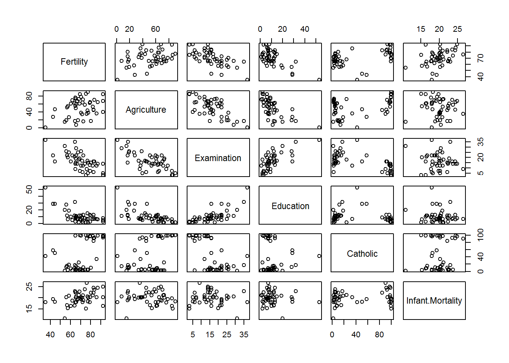
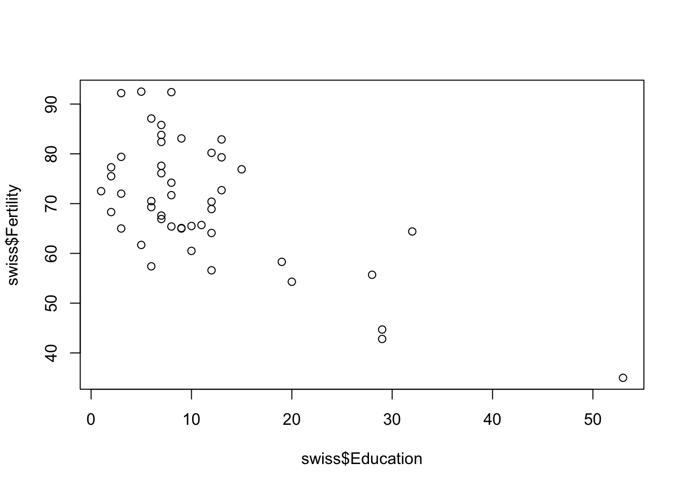
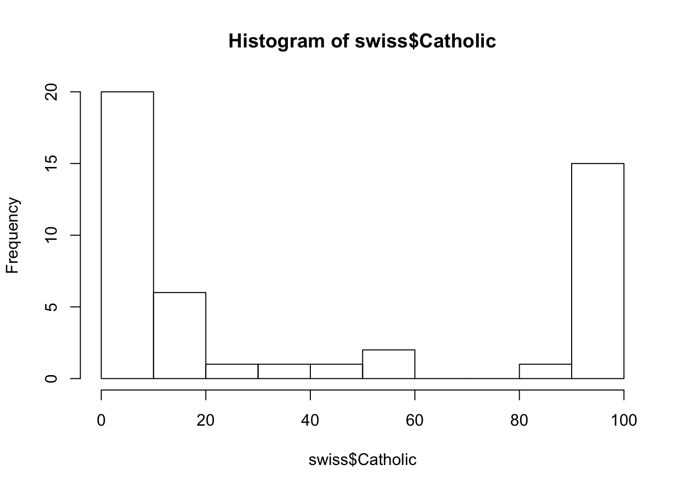
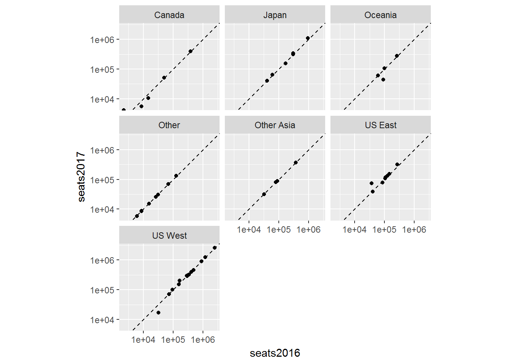
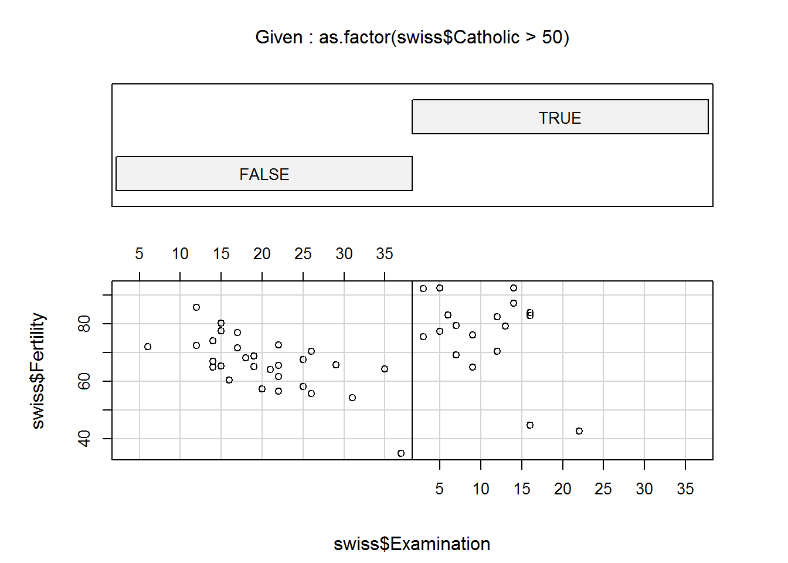

Lecture 1 R Basics
Before we begin, make sure you have R and RStudio installed.
1.1 R Markdown
Throughout this course, R Markdown will make our lives easier. Make sure that the rmarkdown library is installed:
install.packages("rmarkdown")For each assignment, you will create an R Markdown file (*.Rmd) and submit that file by the following class session using classroom.google.com
1.2 Working with data already loaded into R
Base R comes with a set of sample data that is useful for illustrating techniques in R. Run the following command to see a list of the datasets in the core library datasets:
library(help = "datasets")These datasets are accessible automatically. We’ll start with the Swiss Fertility and Socioeconomic Inicators (1888) dataset. See a description of the dataset by using the help command, either ?swiss or help(swiss). This dataset is technically a data.frame, which you can see by using the command class(swiss). For more information on data.frames take a look at the documentation(help(data.frame))
1.2.1 Numeric summaries
Here are a few ways we can summarize a dataset:
head() shows us the first six rows of a data.frame.
head(swiss)## Fertility Agriculture Examination Education Catholic
## Courtelary 80.2 17.0 15 12 9.96
## Delemont 83.1 45.1 6 9 84.84
## Franches-Mnt 92.5 39.7 5 5 93.40
## Moutier 85.8 36.5 12 7 33.77
## Neuveville 76.9 43.5 17 15 5.16
## Porrentruy 76.1 35.3 9 7 90.57
## Infant.Mortality
## Courtelary 22.2
## Delemont 22.2
## Franches-Mnt 20.2
## Moutier 20.3
## Neuveville 20.6
## Porrentruy 26.6summary() provides summary statistics for each column in a data.frame.
summary(swiss)## Fertility Agriculture Examination Education
## Min. :35.00 Min. : 1.20 Min. : 3.00 Min. : 1.00
## 1st Qu.:64.70 1st Qu.:35.90 1st Qu.:12.00 1st Qu.: 6.00
## Median :70.40 Median :54.10 Median :16.00 Median : 8.00
## Mean :70.14 Mean :50.66 Mean :16.49 Mean :10.98
## 3rd Qu.:78.45 3rd Qu.:67.65 3rd Qu.:22.00 3rd Qu.:12.00
## Max. :92.50 Max. :89.70 Max. :37.00 Max. :53.00
## Catholic Infant.Mortality
## Min. : 2.150 Min. :10.80
## 1st Qu.: 5.195 1st Qu.:18.15
## Median : 15.140 Median :20.00
## Mean : 41.144 Mean :19.94
## 3rd Qu.: 93.125 3rd Qu.:21.70
## Max. :100.000 Max. :26.601.2.2 Visual summaries
Scatterplot matrix (default plot of a data.frame):
plot(swiss)
# or
pairs(swiss)
Scatterplot of two dimensions
plot(swiss[,c("Education", "Fertility")])
# or
plot(swiss[4,1])
# or
plot(swiss$Education, swiss$Fertility)
# or
plot(swiss$Fertility ~ swiss$Education)
Smoothed Scatterplot of two dimensions
smoothScatter(swiss$Fertility ~ swiss$Examination)
Scatterplot with a loess (locally weighted polynomial regression)
scatter.smooth(swiss$Fertility ~ swiss$Agriculture)
1.2.3 Distribution plots
Histograms:
hist(swiss$Catholic)
Stem-and-Leaf Plots:
stem(swiss$Fertility)##
## The decimal point is 1 digit(s) to the right of the |
##
## 3 | 5
## 4 | 35
## 5 | 46778
## 6 | 124455556678899
## 7 | 01223346677899
## 8 | 0233467
## 9 | 223Kernel density plot (and add a rug showing where observation occur):
plot(density(swiss$Fertility))
rug(swiss$Fertility)Boxplots:
boxplot(swiss)
1.2.3.1 More complicated charts
Conditioning plots:
coplot(swiss$Fertility ~ swiss$Examination | as.factor(swiss$Catholic > 50))
Star plots (half-star plots here):
stars(swiss, key.loc = c(15,1), flip.labels = FALSE, full = FALSE)
1.3 Assignment
Choose a dataset from datasets (library(help = "datasets") will show you a list) and create 5 charts in an R Markdown file from the example charts above. Run the following command to see what else is available in the base R graphics package:
demo(graphics)